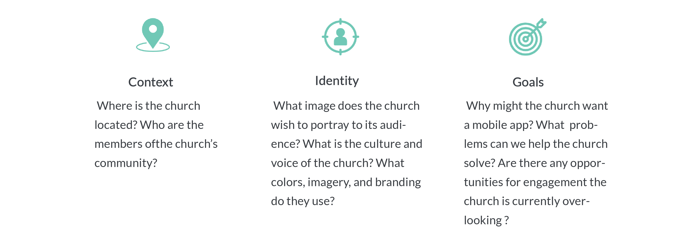

Reality LA Repid App Design
UI/UX Design
I designed 4 hi-fi user interfaces for Reality LA mobile app based on its website and theme.
In the Rapid Design Event, I was assigned to rapidly design 4 high-fidelity user interfaces for Reality LA mobile app based on its website and theme.
Inspire a thriving community
• UX research • Content Maping • Create wireframes and high-fidelity interfaces following the brand style of Reality LA website • Create storyborad to explain the user flow
Sketch Illustrator Photoshop
Independent project
2 days
The challenge
Reality LA is part of the Reality family of churches located in Los Angles. Its website is the main channel to share information. Based on the research of its website, the theme and requirements provided by the event, I defined the challenge as:
How might we inspire a thriving community in Reality LA through mobile?
JUMP PAST SOLUTION TO RESEARCH
The solution
Reality LA is a mobile app that connects people who share the same values with Reality LA.
Key features
 1
1
The research
This mobile design project was started with rapidly researching the RLA main webiste. I conducted the research depending on context, identity, and goals these threee directions.
Donation.
Facebook, Instagram, Twitter, RLA community.
Mission Sunday, providing resouces, providing essential classes, family date night, royal family kids camp, marriage preparation, childcare, choir, discussing how we love our city.
The website has clear information architecture, consistent branding, and valuable content. But the website does not have a calendar for users to quickly find events and groups near them.
Wireframes
Based on the notes from research and comparative results of three similar mobile apps, I created wireframes for the Reality LA mobile app.

Style guideline
In order to maintain the brand consistency, I adapted the main brand color of the website to the mobile. On the RLA website, they have used RGB#274b66 as the main brand color. This color has been used on buttons and the background of “Get Involved” section on the home page. RGB#0DB19F has been used on hover over on the website.
After I selected the two colors used on the website as the mobile design main color, I chose RGB#4AEBC6, the analogous color of RGB#0DB19F to highlighted the icons.
The four colors listed above create a color gradient, which has been widely used on the mobile design to create a clear and positive image of RLA. The color gradient has been used to overlay the pictures, which makes sure that the pictures are in the same style and match the other design elements. The menu items at the bottom use the color gradient as well.